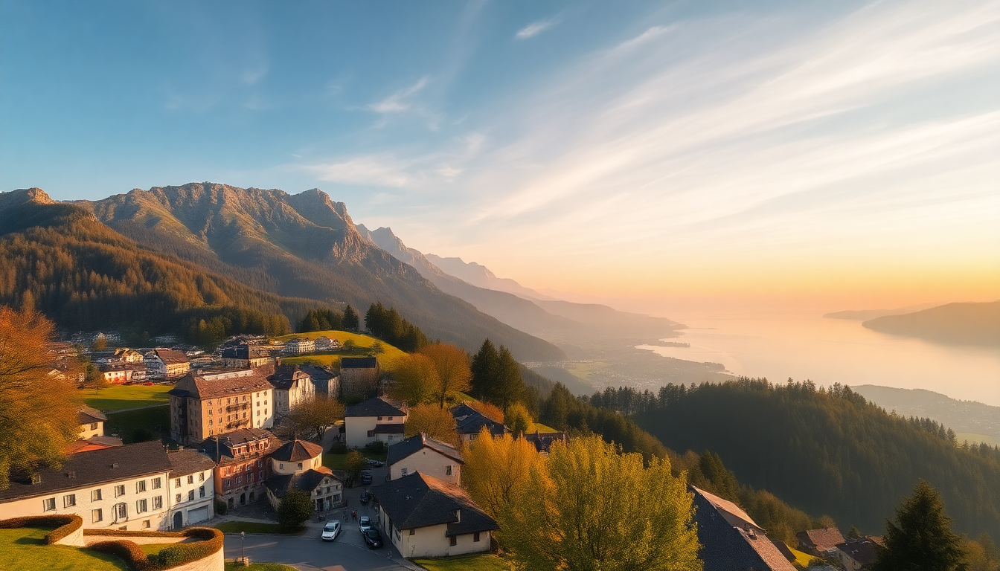

Where to Stay in Interlaken: Best Areas for Every Budget

I spent a week based in Interlaken last autumn, bouncing between the three towns that make up the "city" — and the differences are stark. One night I was in a rowdy hostel near the West train station, the next in a quiet guesthouse in Unterseen where the loudest sound was cowbells echoing off the Jungfrau. Here's what I learned about where to actually sleep, broken down by budget and vibe.
What’s the Difference Between Interlaken’s Three Main Areas?
Interlaken isn't one town — it's three distinct neighborhoods jammed between Lake Thun and Lake Brienz. The main strip is Höheweg, the tourist spine lined with luxury hotels, watch shops, and fondue restaurants. East of the Höheweg is Matten, the residential and budget-friendly pocket. West, across the Aare river, is Unterseen — the medieval old town with cobblestone streets and half-timbered buildings.
- Höheweg: Central, touristy, expensive. Hotels like Victoria Jungfrau Grand Hotel & Spa and Hotel Interlaken sit here. Great views of the Jungfrau from the park.
- Matten: Quieter, cheaper, more local. We found good kebab shops and a Coop supermarket for picnic supplies. Hotel Rössli is a solid mid-range option here.
- Unterseen: Charming, historic, slower pace. The Hotel Krebs overlooks the river, and Restaurant Bären serves proper Bernese rosti. No direct mountain views, but the atmosphere is worth the trade-off.
If you want to wake up to the Eiger North Face and don't mind crowds, pay for Höheweg. If you're on a budget or prefer local life, sleep in Matten or Unterseen and walk 15 minutes to the action.
Where Should Budget Travelers Stay in Interlaken?
Interlaken is expensive — there's no way around it. But I found two hostels that don't feel like hostels. Backpackers Villa Sonnenhof sits on a hill in Matten with a terrace overlooking the Jungfrau. Double rooms start around 100 CHF, and the included breakfast is generous. The other is Funny Farm, a bare-bones spot near the West station that's basically a party hostel — avoid if you want sleep before a 6am train to Jungfraujoch.
- Backpackers Villa Sonnenhof (Matten): Clean, quiet after 10pm, great common kitchen. Book directly for better rates.
- Funny Farm (West station area): Cheap, loud, social. Fine for solo backpackers, not for couples or families.
- Airbnb in Unterseen: We rented a studio above a bakery for 80 CHF/night. Search for "Unterseen apartment" — fewer options than hotels, but better value.
My tip: skip the East station area. It's cheaper but feels like a parking lot with trains. Stay in Matten or Unterseen and use the free bus pass (most hotels give you one) to reach the main strip.
What Are the Best Mid-Range Hotels in Interlaken?
Mid-range in Interlaken means 150–250 CHF per night. The sweet spot is Hotel Chalet Swiss in Unterseen — a converted 19th-century chalet with wood-paneled rooms and a solid breakfast buffet. We paid 180 CHF in October and had a balcony overlooking the Aare. Another good option is Hotel Derby on the Höheweg, which is cheaper than its neighbors because it lacks a spa but still has prime location and clean rooms.
- Hotel Chalet Swiss (Unterseen): Cozy, authentic, free parking. Book a "Jungfrau view" room — worth the extra 20 CHF.
- Hotel Derby (Höheweg): Functional, no frills, great location. The attached restaurant, Hüsi Bierhaus, has decent Swiss-German pub food.
- Hotel Rössli (Matten): Family-run, quiet, close to the West station. The staff helped us plan a day trip to Grindelwald without any upsell.
Avoid Hotel Metropole on the Höheweg — it looks grand from outside, but the rooms are dated and the noise from the street is relentless.
Which Luxury Hotels Are Actually Worth the Splurge?
If you're going to drop 500+ CHF a night, do it right. Victoria Jungfrau Grand Hotel & Spa is the iconic property on the Höheweg — massive pool, Michelin-starred restaurant La Terrasse, and a staff-to-guest ratio that makes you feel like royalty. I didn't stay there (out of my budget), but I did use the spa for 50 CHF as a day guest — worth it for the heated outdoor pool with mountain views.
- Victoria Jungfrau Grand Hotel & Spa (Höheweg): The gold standard. Book a "Superior Room with Eiger View" — the cheaper rooms face the back alley.
- Beatus Wellness & Spa Hotel (lakefront, 10 min bus from Interlaken): On Lake Thun, quieter, with a private beach. Better for couples than the city-center bustle.
- Lindner Grand Hotel Beau Rivage (Höheweg): Slightly cheaper than Victoria Jungfrau, similar views. The afternoon tea is excellent.
Honest opinion: the luxury hotels on the Höheweg are overpriced for what you get unless you actually use the spa and restaurants. If you just need a nice bed and a view, a mid-range room at Hotel Chalet Swiss will make you just as happy.
Is It Better to Stay Outside Interlaken?
Yes, if you have a car or don't mind a 20-minute bus ride. Wilderswil is a village 5 minutes by train from Interlaken with cheaper hotels and direct access to the Schynige Platte railway. We stayed at Hotel Bären Wilderswil for 120 CHF/night — clean, quiet, and the restaurant serves the best cordon bleu I've had in Switzerland.
- Wilderswil: Train to Interlaken in 5 min, quieter, cheaper. Good for hikers.
- Beatenberg: Above Lake Thun, 20 min by bus, incredible views. Hotel Beatus is a solid choice.
- Ringgenberg: On Lake Brienz, 10 min by bus, tiny and sleepy. Gasthof Sternen has basic rooms for 90 CHF.
The catch: buses stop running around midnight, and trains run hourly late at night. If you plan to party in Interlaken, stay in town.
How Do I Get Around Interlaken Without a Car?
You don't need a car. Interlaken is walkable end-to-end in 30 minutes, and the local bus network is free with a hotel guest card. The West train station connects to Bern and Zurich, the East station to Lucerne and the Jungfrau region. I used the Interlaken–Grindelwald–Wengen train line daily — it's included in the Swiss Travel Pass, but even without one, a single ticket to Grindelwald is 12 CHF.
- Free bus pass: Every hotel gives you one. Use it for the 101 and 102 lines that circle the town.
- Bike rental: Interlaken Bike near the West station rents e-bikes for 30 CHF/day.
- Boat to Brienz: The lake ferry from Interlaken East station dock takes 1.5 hours and is cheaper than the train. We did it on a sunny afternoon — worth the time.
Don't bother with taxis. They're 50 CHF for a 5-minute ride.
FAQ
Is Interlaken safe at night? Yes, very safe. I walked from Unterseen to Matten at midnight alone and felt fine. The main risk is drunk tourists near the Höheweg on weekends. Keep your wallet zipped in crowded bars, but violent crime is virtually nonexistent.
Should I book accommodation in advance for summer? Absolutely. June through August, hotels sell out weeks ahead. I booked in March for an October trip and still had limited options. If you're flexible, stay in Wilderswil or Beatenberg — they often have last-minute availability when Interlaken proper is full.
What’s the best neighborhood for families? Unterseen, hands down. It's quiet, has playgrounds along the river, and the Hotel Krebs has family rooms with bunk beds. Avoid the Höheweg — too many bars and souvenir shops that kids will beg to enter.
Conclusion
- Budget travelers: Stay in Matten at Backpackers Villa Sonnenhof or rent an Airbnb in Unterseen.
- Mid-range: Hotel Chalet Swiss in Unterseen or Hotel Derby on the Höheweg deliver solid value.
- Luxury: Splurge on Victoria Jungfrau if you'll use the spa; otherwise, save your money and stay in Wilderswil.
- For peace and quiet: Skip Interlaken entirely and base yourself in Wilderswil or Beatenberg — you'll save money and sleep better.
- Getting around: Use the free hotel bus pass and the train to Grindelwald. Don't rent a car.